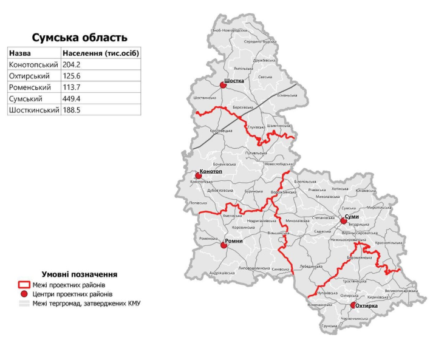
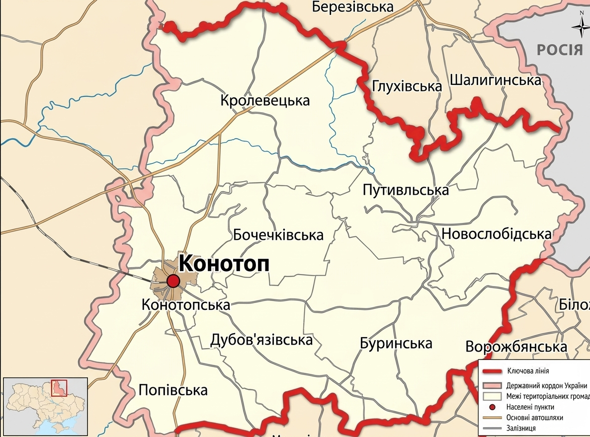
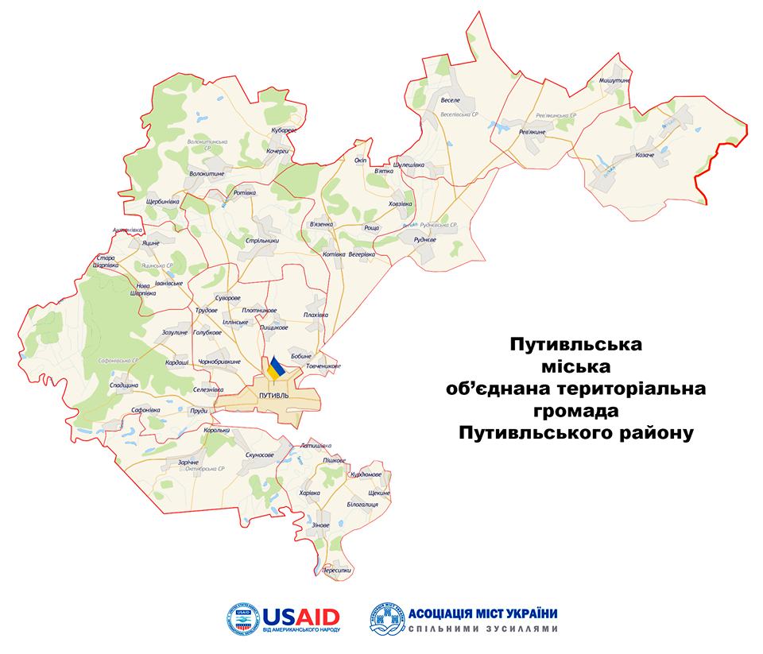

Комплексний аналіз двох фундаментальних основ суверенітету — державного кордону та адміністративно-територіального устрою — в умовах збройної агресії та глибоких трансформаційних процесів сучасної України.
Чому кордон і адміністративно-територіальний устрій розглядаються разом
Державний кордон та адміністративно-територіальний устрій є двома фундаментальними основами, що визначають суверенітет, безпеку та економічний потенціал країни. В умовах сучасної України, яка переживає збройну агресію та глибокі трансформаційні процеси, їхнє комплексне оцінювання та реформування набувають критичного значення.
Політико-економічна оцінка державного кордону України визначається її транзитним положенням між Європою та Азією, наявністю виходу до Чорного та Азовського морів, а також сусідством з країнами Європейського Союзу, що створює як економічні можливості для транзиту, так і політичні ризики через регіональну нестабільність.
Реформування адміністративно-територіального устрою України (з 2015 року) передбачало децентралізацію влади, надання більших повноважень місцевому самоврядуванню та зміну поділу країни на менші, сильніші одиниці (об’єднані територіальні громади).
Кордон — це не просто лінія на карті, а складний політико-економічний інститут, а адміністративно-територіальний устрій — не просто поділ території, а механізм розподілу влади й ресурсів. Їхня синхронізація є основою стійкої та європейської України.
Матеріальне втілення незалежності, цивілізаційний стик і прикордонна політика
Державний кордон України — це не просто лінія на карті, а складний політико-економічний інститут, який виконує кілька ключових функцій. Розглянемо їх послідовно.
Кордон є матеріальним втіленням територіальної цілісності та незалежності України. Сьогодні, у зв’язку з тимчасовою окупацією частини території та незаконною анексією Криму, функціонування кордону як інструменту суверенного контролю значно ускладнено. Це створює постійний політичний виклик і загрозу національній безпеці.
Матеріальне втілення суверенітету та незалежності. Основа національної державності та міжнародного визнання.
Тимчасова окупація частини території (включно з Кримом та частинами Сходу/Півдня) обмежує суверенний контроль на цих ділянках.
Україна знаходиться на стику цивілізаційних плит — ЄС та Євразійського економічного союзу. Її кордони відокремлюють європейський демократичний простір від авторитарних режимів. Це змушує Україну проводити надзвичайно виважену прикордонну політику, балансуючи між відкритістю для співпраці та захистом від зовнішніх загроз (гібридних атак, нелегальної міграції, контрабанди зброї).
| Категорія | Опис / характеристика | Значення для України |
|---|---|---|
| Територіальна цілісність | Матеріальне втілення суверенітету та незалежності. | Основа національної державності та міжнародного визнання. |
| Складнощі функціонування | Тимчасова окупація частини території (включно з Кримом та частинами Сходу/Півдня). | Обмеження суверенного контролю на ділянках, що є постійним політичним викликом та загрозою безпеці. |
| Цивілізаційний стик | Розташування на межі ЄС (демократія) та Євразійського економічного союзу (авторитаризм). | Фільтр / буферна зона між двома цивілізаційними просторами. Визначає геополітичну роль. |
| Прикордонна політика | Необхідність балансувати між відкритістю (співпраця з ЄС) та захистом від загроз. | Вимагає надзвичайно виважених рішень для підтримки безпеки та інтеграції. |
| Основні зовнішні загрози | Гібридні атаки (військово-політичний тиск, дезінформація), нелегальна міграція, контрабанда (зброї, наркотиків, людей). | Безпосередня загроза національній безпеці, економіці та соціальній стабільності. |
| Стратегічна функція | Відокремлення європейського демократичного простору від авторитарних режимів. | Ключовий елемент системи колективної безпеки Європи та фактор євроатлантичної інтеграції. |
Кордон з Білоруссю та Росією перетворився з адміністративної межі на лінію фронту гібридної та звичайної війни. Це вимагає корінної перебудови всієї прикордонної інфраструктури, технічного оснащення та оперативних процедур.
Протяжність ділянок, морські/річкові частини та геополітичні висновки
Загальна конфігурація кордонів України відображає її складне геополітичне положення. Найдовша ділянка — з Росією; значна частина кордону припадає на морські та річкові ділянки; західні кордони — це «шлюз» до ЄС.
| Країна | Загальна протяжність, км | Морська / річкова ділянка, км |
|---|---|---|
| Росія | 2295,0 | 432,1 |
| Молдова (у т. ч. Придністров’я) | 1222 (405) | 267 |
| Білорусь | 1084,2 | 325,9 |
| Румунія | 613,8 | 33 / 292,2 |
| Польща | 542,39 | 187,3 |
| Угорщина | 136,7 | 85,1 |
Понад половину сухопутного кордону Україна має з Росією та Білоруссю — це ділянки, які після 2014 року перетворилися на зону підвищеної безпекової загрози. Водночас західні ділянки (Польща, Румунія, Словаччина, Угорщина) — це «шлюз» для експорту та євроінтеграції.
Транзит, логістика, інвестиційний клімат і втрати через окупацію
Україна має потенційно вигідне транзитне положення між ЄС та країнами Азії. Добре функціонуючий кордон із країнами ЄС (Польщею, Румунією, Словаччиною, Угорщиною) є «шлюзом» для експорту української сільськогосподарської продукції, сировини та імпорту високотехнологічної продукції. Однак логістичні потужності цих переходів часто не відповідають попиту, що призводить до черг, простоїв і збитків для бізнесу.
Шлюз між ЄС та Азією. Потенціал для логістичних хабів, але інфраструктура переходів обмежена.
Затримки, бюрократія та корупція на митницях створювали бар’єри. Цифровізація покликана це змінити.
Втрачено контроль над значними ділянками кордону, портами Азово-Чорноморського басейну та родовищами.
Ефективність кордону безпосередньо впливає на інвестиційний клімат. Затримки, бюрократія та корупція на митницях створювали значні бар’єри для міжнародної торгівлі. Реформи Державної митниці та Державної прикордонної служби, їхня цифровізація (впровадження систем «Єдине митне вікно», електронних накладних) спрямовані на перетворення кордону з бар’єру на ефективний інструмент торгівлі.
Тимчасово окуповані території на сході та в Криму позбавили Україну контролю над значними ділянками кордону, доступом до морських портів Азово-Чорноморського басейну та родовищ корисних копалин. Це нанесло колосальний економічний збиток і деформувало логістичні ланцюги.
Політико-економічна оцінка свідчить, що державний кордон України є зоною одночасно ризиків (військова загроза, контрабанда) та можливостей (транзит, інтеграція в ЄС). Його подальша модернізація має бути спрямована на максимальне відкриття на захід та надійне закриття на схід і північ.
Децентралізація, об’єднані громади та новий поділ на райони
Реформа децентралізації та зміни адміністративно-територіального устрою, розпочата в 2014 році, є однією з найглибших і найуспішніших трансформацій в історії незалежної України. Її мета — подолання радянської централізованої моделі управління.



Об’єднання дрібних сільських рад у більші, фінансово та управлінсько спроможні громади, здатні самостійно вирішувати питання місцевого значення (освіта, охорона здоров’я, благоустрій).
Передача від обласних центрів до громад реальних повноважень, а головне — фінансових ресурсів для їх реалізації через механізм місцевих бюджетів.
Замість колишніх 490 дрібних та неефективних районів було створено 136 більших, які мають координувати розвиток громад у своїх межах.
Чітке розмежування функцій між органами влади різних рівнів — від громади до області та центру.
скорочення кількості районів
старт реформи децентралізації
об’єднаних територіальних громад (станом на 2020 р.)
Що змінилося для громад, громадян і держави
Об’єднані громади отримали значні власні доходи та дотації, що дозволило їм інвестувати в інфраструктуру, створювати сприятливі умови для бізнесу, розвивати туризм.
На місцевому рівні з’явилися сучасні лікарні, школи, культурні центри, які раніше були недоступні для жителів сіл.
Громади отримали інструменти для ефективного управління своїми землями та ресурсами, залучення інвестицій.
Реформа зменшила залежність місцевої влади від центральної, підвищивши її відповідальність перед громадянами.
Жителі отримали реальний вплив на прийняття рішень на місцевому рівні через інструменти прямої демократії.
Ефективна влада на місцях, яка забезпечує якісні послуги, підвищує довіру громадян до держави в цілому, що є ключовим фактором консолідації нації, особливо в умовах війни.
Ефективна влада на місцях, яка забезпечує якісні послуги, підвищує довіру громадян до держави в цілому, що є ключовим фактором консолідації нації, особливо в умовах війни.
Синхронізація двох ключових процесів як основа стійкої України
Існує тісний взаємозв’язок між станом державного кордону та адміністративно-територіальним устроєм. Спроможні прикордонні громади можуть стати центрами транскордонного співробітництва, розвивати прикордонну інфраструктуру, логістичні хаби, що посилить економічну функцію кордону. Водночас, стабільний та безпечний кордон створює умови для інвестицій та стабільного розвитку цих громад.
Політико-економічна трансформація України полягає в синхронізації двох ключових процесів: створення «розумного», безпечного та відкритого для співпраці кордону та формування сильної, самодостатньої та демократичної системи місцевого самоврядування. Ці дві складові є основою для побудови стійкої, процвітаючої та європейської України.
Ухвалення концепції реформування місцевого самоврядування та територіальної організації влади.
Створення перших ОТГ, запровадження міжбюджетних трансфертів та розширення власних доходів.
Замість 490 районів — 136 нових, укрупнення громад, завершення формування базового рівня.
Роль громад у стійкості тилу, евакуації, гуманітарній допомозі; нові вимоги до кордону та безпеки.
Для самоперевірки та обговорення на занятті